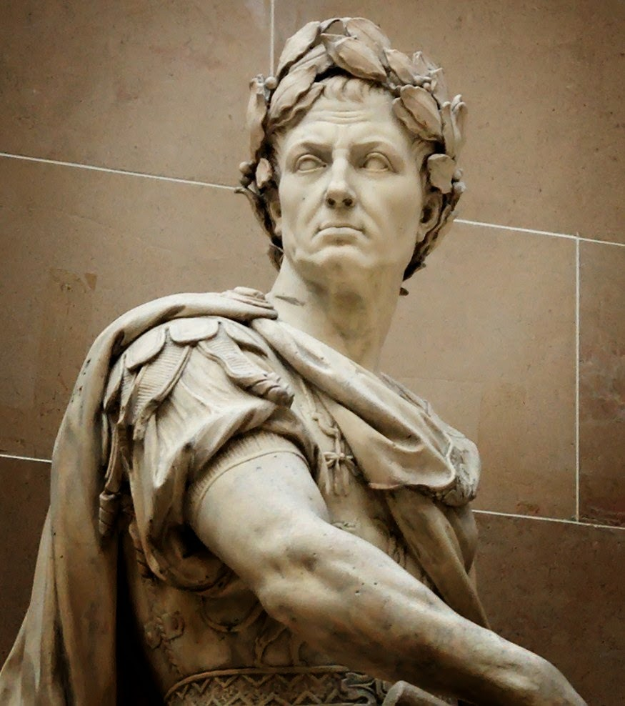

Júlio César e a Conquista das Gálias
Bem-vindo à história de Júlio César!
Antes de César
Antes de falarmos sobre Júlio César, vamos entender o contexto. Roma nasceu como uma pequena cidade no Vale do Tibre, na península Itálica, por volta de 753 a.C. — segundo a lenda, fundada pelo gêmeo Rômulo após matar o próprio irmão, Remo. Do que era uma aldeia entre colinas, Roma se transformou, ao longo de doze séculos, no império mais poderoso do mundo antigo.
Fases da Roma Antiga
Monarquia (753 a.C. - 509 a.C.): Governada por reis, com forte influência etrusca. Acabou quando o Senado expulsou o último rei, Tarquínio, o Soberbo.
República (509 a.C. - 27 a.C.): O poder passou ao Senado e a cônsules eleitos anualmente. Foi a era da expansão: Roma conquistou a Itália, derrotou Cartago nas Guerras Púnicas e dominou o Mediterrâneo.
Império (27 a.C. - 476 d.C.): O poder se concentrou em um único imperador. Começou com Otávio Augusto, sobrinho e herdeiro de Júlio César.
Foi na República — no auge da expansão, quando o Senado e os generais disputavam o controle do Estado — que Júlio César surgiu. Sua história é, ao mesmo tempo, a história do fim da República e do nascimento do Império.

Quem foi Júlio César?
Caio Júlio César (100 a.C. – 44 a.C.) foi general, político e escritor romano. Não foi imperador — o título ainda não existia. Mas foi o homem que, sem querer ou sem perceber, destruiu a República e abriu caminho para o Império.
Nascido na gens Julia, uma família patrícia que se dizia descendente de Vênus, César cresceu sem poder hereditário. Toda a sua ascensão foi construída: pela política, pela espada e pela pena.
O que ele fez
Formou o Primeiro Triunvirato (60 a.C.) com Pompeu e Crasso. Conquistou a Gália em oito anos. Cruzou o Rubicão e venceu a guerra civil. Reformou o calendário, expandiu o Senado e se tornou ditador perpétuo. Foi assassinado no Senado em 15 de março de 44 a.C.
Por que ele importa
O nome "César" virou sinônimo de governante supremo — Kaiser, Tsar, Czar. O calendário juliano é a base do calendário que usamos hoje. E a República que ele derrubou nunca mais voltou.
A Conquista da Gália (58–50 a.C.)
A Gália era um mosaico de tribos celtas. Em oito anos, César as conquistou todas — e escreveu tudo em primeira pessoa no De Bello Gallico.
As campanhas
Derrotou os helvícios, expulsou os germânicos de Arioviste e cruzou o Canal da Mancha duas vezes para invadir a Britânia. Em cinco anos, a Gália parecia pacificada.
A Revolta de Vercingetórix (52 a.C.)
Um jovem chefe arverno unificou quase todas as tribos galas e adotou a estratégia da terra queimada — destruindo cidades e suprimentos à frente do exército romano. César, sem cidades para tomar, marchava por um vazio.
Alesia — O Cerco Duplo
Vercingetórix recuou para a fortaleza de Alesia. César o cercou com 80.000 homens — mas 600.000 galos se aproximavam por fora. César construiu duas muralhas: uma voltada para dentro, outra para fora. 19 km de fossos e torres, em dias.
O socorro atacou a muralha externa; os defensores tentaram a saída noturna. César enviou legiões para os dois lados. A batalha durou o dia inteiro. Quando a noite caiu, 200.000 galos estavam mortos. Vercingetórix se entregou.
O Balanço
César escreveu que 1 milhão de galos foram mortos ou escravizados. Os números são inflados, mas a escala é inegável. A Gália virou província romana. César voltou com 40.000 legionários e a fama de homem que conquistou o mundo. Mas o Senado queria uma coisa só: que ele entregasse o exército.